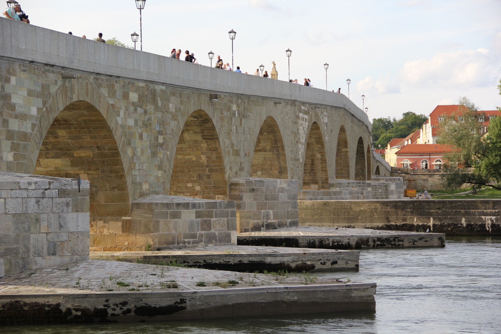
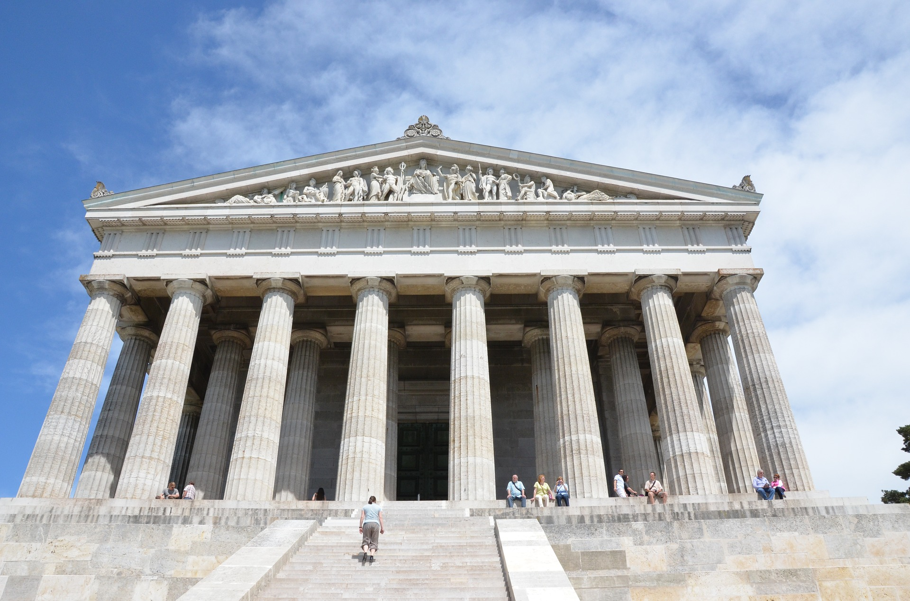

1.
Der Regensburger Dom (auch: Dom St. Peter, benannt nach dem hl. Petrus) ist die bedeutendste Kirche der Stadt Regensburg und die Kathedrale des Bistums Regensburg. Der Dom gehört neben dem Kölner Dom zu den bedeutendsten gotischen Kathedralen in Deutschland.
In Nachfolge eines romanischen Doms, von dem noch ein Turm (Eselsturm) erhalten ist, begann der Bau des gotischen Doms 1275. Ab 1450 war das Gebäude überdacht und nutzbar. Der Ausbau der beiden Domtürme und der Turmhelme erfolgte aber erst von 1859 bis 1869.
Tipp: Figur des „lachenden Engels“ am südwestlichen Vierungspfeiler

2.
Bei einem Besuch in Regensburg darf man sie auf keinen Fall verpassen: Ein Meisterwerk der mittelalterlichen Baukunst in Deutschland – Die Steinerne Brücke.
Neben dem Regensburger Dom ist sie das bedeutendste Wahrzeichen der Stadt und war sicherlich ein Grund für die Aufnahme Regensburgs in die UNESCO-Welterbeliste. Die Steinerne Brücke, die den altbaierischen Stadtteil Stadtamhof mit der Regensburger Altstadt verbindet, galt im Mittelalter als ein echtes Weltwunder
Tipp: Die Dauerausstellung an der Südseite bestehend aus fünf Themenbereichen

3.
In der Gedenkstätte Walhalla in Donaustauf im bayerischen Landkreis Regensburg werden – ursprünglich auf Veranlassung des bayerischen Königs Ludwig I. – seit 1842 bedeutende Persönlichkeiten „teutscher Zunge“ mit Marmorbüsten und Gedenktafeln geehrt. Benannt ist sie nach Walhall, der Halle der Gefallenen in der nordischen Mythologie. Der Architekt war Leo von Klenze.
Tipp: Mit dem Fahrrad, ein paar kühlen Bier und einem nettem Date die wunderbare Aussicht genießen

4.
Nur 4 km von der Donau entfernt befindet sich ein besonderes Highlight der Region Regensburg. Als eines der schönsten und am Aufwändigsten errichteten Bauwerke zierte der Nepal-Himalaya-Pavillon einst die Expo 2000. Seit 2003 erfreut er in einer traumhaften Parkanlage zahlreiche Besucher in Wiesent.
Tipp: Nepal in Bayern - worauf wartest du?